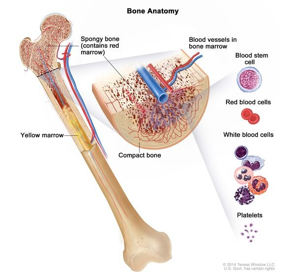

"The robotic knee replacement by Dr. Bagaria was life-changing. I was walking the very next day with minimal pain. The care at Reliance Hospital is truly world-class."
RK
Dr. Vaibhav Bagaria is Director of the Department of Orthopaedics at Sir H. N. Reliance Foundation Hospital, Mumbai, with expertise in robotic knee and hip replacement, partial knee replacement, sports injury and arthroscopy, complex trauma and pelvic-acetabular reconstruction, and 3D-printed custom implants.
Operating out of one of India's most advanced healthcare facilities, Dr. Bagaria provides care in an environment that meets the highest global standards. The hospital is equipped with state-of-the-art operation theatres, dedicated robotic surgery suites, and comprehensive rehabilitation centers.
Sir H. N. Reliance Foundation Hospital is NABH accredited and JCI certified, with dedicated robotic surgery suites and Class 100 ultra-clean laminar airflow operation theatres.


20+
Years Experience
15K+
Surgeries
150+
Scientific Publictions
Director - Department of Orthopaedics at Sir H. N. Reliance Foundation Hospital, Mumbai.
When you're searching for the best orthopedic doctor in Mumbai, credentials matter but so does the philosophy behind the practice.
Dr. Bagaria completed his M.B.B.S. from Government Medical College (GMC), Nagpur earning three gold medals followed by his M.S. (Orthopaedics) from the prestigious KEM Hospital, Mumbai. He further honed his expertise through fellowships across Australia, Germany, and the United States.
Department of Orthopaedics
Multiple Patents in Orthopedics
Knee pain that stops you climbing stairs, walking to the market or sleeping through the night deserves a proper solution, not another round of painkillers. Dr. Vaibhav Bagaria performs robotic knee replacement in Mumbai, where the worn surfaces of the knee are replaced and the new joint is fitted to your own anatomy. Every knee is shaped a little differently. Robotic assistance helps the surgeon work to a plan made for your knee specifically, which is what makes the new joint feel natural when you walk. Most patients are up with support the same day or the next morning, and back to everyday activities within a few weeks. Dr. Bagaria treats knees that have become stiff over the years, both knees together where needed, and cases where an earlier surgery needs to be redone.
Hip pain has a way of shrinking your world a shorter walk, a slower stride, help needed to put on shoes. Dr. Bagaria performs robotic hip replacement in Mumbai for arthritis, avascular necrosis and hips that have stiffened over time. The aim is simple: a hip that moves freely, legs that feel the same length, and walking that feels normal again rather than merely possible. Getting there depends on careful planning before the day of surgery, and robotic assistance helps the surgeon carry that plan out accurately. Dr. Bagaria also handles hip resurfacing, more complicated cases where the joint has been affected by long-standing conditions or an old injury, and hips that need a second operation years after the first.
Over two decades of orthopaedic surgical
experience
Internationally fellowship-trained in the USA,
Germany and Australia
Surgery recommended only when it is
genuinely the better option
Among India's earliest robotic joint
replacement surgeons
150+ peer-reviewed publications and multiple
device patents
Structured rehabilitation planned before the
operation, not after

Joint pain rarely arrives all at once. It starts as a twinge on the stairs, a knee that aches after a long day, a shoulder that will not reach the top shelf. Dr. Vaibhav Bagaria treats the full range of bone and joint problems in Mumbai arthritis, sports injuries, fractures, shoulder and ankle complaints, and joints that have worn out over years of use. Not every problem needs an operation, and a good deal of what he does is deciding when one is genuinely warranted. Many patients are helped by physiotherapy, injections or a change in how they use the joint. When surgery is the right answer, the plan is built around your age, your work and what you actually want to get back to a patient of seventy who wants to walk to the temple and a runner of thirty-five have different goals, and the same operation is not right for both. Every consultation begins with a proper examination and a straight explanation of your options, including the option of waiting.

The first question most patients ask is whether a robot will be operating on them. It will not. Dr. Bagaria performs the surgery himself the robotic arm is a guide that helps him work to the plan made for your joint, in the same way a surgeon uses any other instrument. He has worked with this technology since its early days in India and now trains other surgeons in it. What the technology adds is consistency. Joints vary from person to person, and fitting a new one accurately to your particular anatomy is what makes it feel natural afterwards rather than merely functional. Robotic assistance helps hold the surgery to that plan. It is not the right tool for every case, and it is not a substitute for judgement deciding whether you need the operation at all still comes first, and that decision is made in the consulting room, not by any machine.
Advancing the field of orthopedics through cutting-edge research and academic contributions
Peer-reviewed research & citations
150+
Publications
5,200+
Citations
42
h-index
Dr. Vaibhav Bagaria's pioneering work in robotic orthopedics has been recognized by leading media outlets across India.
Watch our latest short videos for quick tips, answers, and expert orthopedic advice.
Schedule your consultation with Dr. Vaibhav Bagaria today


Dr. Vaibhav Bagaria
Aug 20, 2026
Dr Vaibhav Bagaria
Prathna Samaj, Khetwadi, Girgaon,
Mumbai, Maharashtra 400004
02261305757